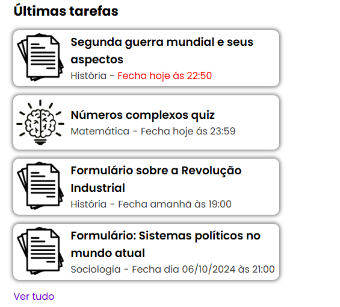
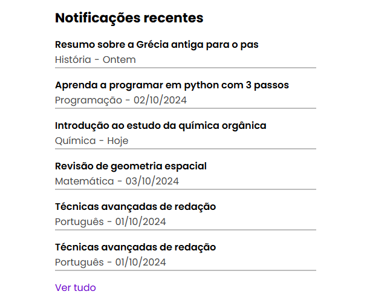
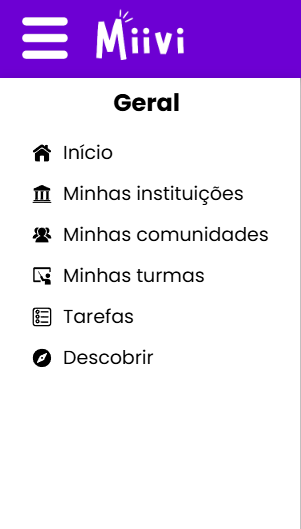
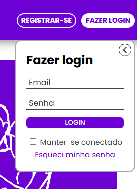
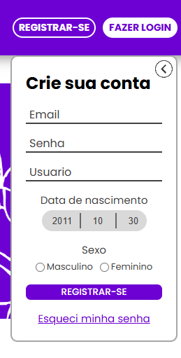
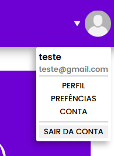
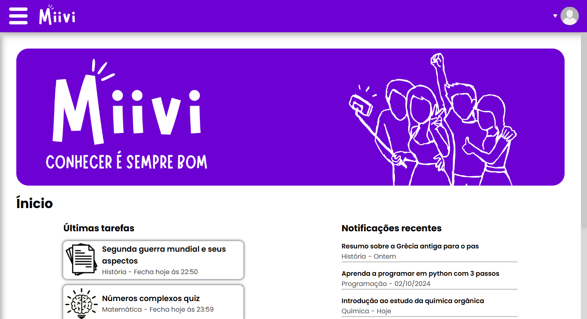
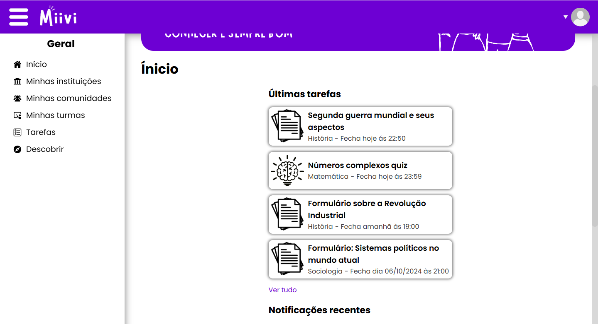

Nós somos um grupo de estudantes do Centro de Ensino Médio Integrado do Cruzeiro, nossa equipe consta com
alunos de diferentes salas que trabalharam juntos para um projeto de benefício da escola
Oque é o Miivi?
O Miivi nada mais é do que uma plataforma pedagógica que visa a cooperação dos estudantes e busca ser
acessível a todos, uma vez que todo o layout é dinâmico e simples.
Como funciona o nosso projeto e quais as melhoras em relação a plataforma atual?
Principais funcionalidades
No Miivi, pode se criar instituições que podem conter comunidades e turmas,
e algumas outras funcionalidades assim como podem se criar comunidades e turmas independentes,
sem que haja uma instituição veinculada. As comunidades serão caracterizadas por sua abrangência,
sendo o intuito a socialização dos membros, enquanto as turmas são conhecidas por serem mais
regradas e
podendo ser definidas tarefas. Uma das grandes inovações também é sobre o espaço de busca, onde
pode-se achar
instituições, comunidades e turmas públicas, como uma espécie de marketplace, sendo possível também
vender vagas para entrar nas mesmas, isso abre possibilidade para venda de espaços e cursos.
Quais as melhorias
As tarefas serão inovação em relação a plataforma atual,
com a proposta de serem atividades em que os alunos podem cooperar entre si, como atividades em
conjunto e atividades
especiais e divertidas como um quis. Além disso a plataforma se destaca em relação a atual pelo
design, nós procuramos
fazer a plataforma ser minimalista para facilitar o entendimento da mesma, pode-se dizer que a
plataforma também destaca
mais as informações importantes, com notificações realmente funcionais e cores de destaque para
forcar o usuário.
Segue exemplos práticos do que estamos falando e produzindo:



Oque produzimos até agora
Sistema de registro e login funcional
Nossa equipe fez um sistema de registro em login funcional, com banco de dados, que respeita
as leis, sendo impossível se registrar sendo menor de 13 anos. Como está no íncio
ainda consta com alguns bugs que iremos resolver. Segue as imagens para se visualizar :



Layout da estrutura
Depois de muita programação, conseguimos um resultado satisfatório e minimalista da nossa estrutura
principal,
sendo feito um layout da nossa página inicial com banners e nosso rodapé que sera ultilizado quase
sempre
no projeto. O menu lateral conta com animações e fizemos popups de registro e login, também
exenciais.


Teste o nosso layout
Disponibilizamos um teste da nossa plataforma no estado atual porém sem interações.
Por conta do domínio atual do site ser grátis, somente para a entrega do trabalho, não é
possível
usar do nosso banco de dados e consequentemente dos nossos outros serviços, pode-se somente
visualizar
e testar os efeitos.
O futuro do Miivi
Concluindo, o Miivi é um projeto que não foi só feito pensando na feira de ciências, mas para ser
escalado e para que algum dia,
ele fique no ar, de livre acesso na internet e buscando abranger uma diversidade de comunidades.
Queremos não só deixar
o projeto de herança na escola mas realmente transforma-lo em algo grande e um dia desenvolver também um
app para ele.
Espere ansioso! Algum dia nossa plataforma vai chegar pra você!